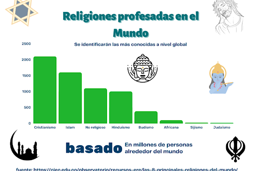

La religión siempre ha sido un tema complicado, en la historia humana, la religión ha presentado complicaciones en cuanto charlas ligeras se refiere, terminando en un caos si los encargados tienen diferencia de religión. Esto no supone un problema solamente para los encargados (altos mandos políticos), sino para la población en general, ya que pueden llegar a discriminar, denigrar, e incluso violar derechos de cualquier civil por el hecho de profesar una religión diferente a la de los demás.
Desde el inicio de los gobiernos europeos, la religión fue tratada como una institución especial, donde se le otorgaba una mayoría de poder político, algo que sería interesante de destacar, es el estricto manejo de la literatura; temas como la aceptación de religiones extranjeras o su simple mención era motivo de sanciones graves (la mayoría mortales). En este momento de la historia, la intolerancia era extrema, aprovechándose de su poder político y económico, subyugando a su gente e imponiendo las ideas que decretaba esta. Por más de 500 años la religión católica y su iglesia (principalmente) dominaron como única y verdadera, eliminando a los opositores y acallando revueltas.
Religión, en boca de todos, manejada por pocos: Pero, como en toda historia, siempre hay un opositor, en nuestro caso, simplemente dudaba acerca del gran poder de la iglesia católica. Con cuestiones tan literales acerca de su firme verdad absoluta, es que la gente empezó tener una revolución ideológica, poniendo razones hacia el gobernante de cabecera para poder quitar a la iglesia tantas libertades. Los libros acerca de un posible nuevo Estado, reformas de gobierno e incluso puestas en duda la existencia de de un dios, no eran de esperarse, provocando una iglesia furiosa con su población, que, en lugar de tratar de arreglarlo, su postura más fuerte era censurar los libros y asesinar a sus autores.
Moviéndonos en el tiempo, notamos una iglesia totalmente furiosa, habiendo aceptado tantas reformas y con una reducción de poder considerablemente pequeña, esta además se veía en la penosa y humillante necesidad de aceptar a las demás religiones, cosa que antes la única solución eran guerras…
No fue sino hasta siglos después ( y varios cambios de cabezales religiosos ), que la iglesia parecía comprender sus propias reglas, empezando a aceptar sus errores y convocando a gobernantes a un llamado de tolerancia religiosa, todo este hilo de movimientos fueron tan bruscos, en pero a un paso muy lento, fue que las distintas religiones se empezaron a aceptar las unas a las otras como religiones aceptables (pero claro, la de ellos sigue siendo la verdadera), los espacios se empezaron a flexibilizar en cuestión de cantidad de diferentes iglesias en un territorio relativamente pequeño, pero, aun falta algo muy importante: la gente.
Si bien los diferentes gobernantes religiosos han hecho pública su tolerancia religiosa, después de tantos años de una única religión aceptada, ese sentimiento de obligación político sigue vigente aun después de generaciones, siendo el principal problema en cuanto a este tema se refiere.
